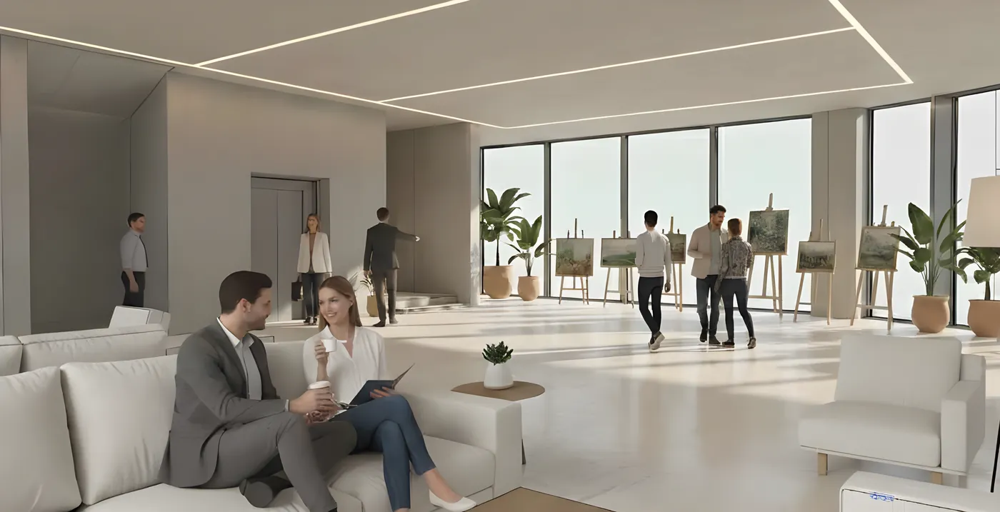
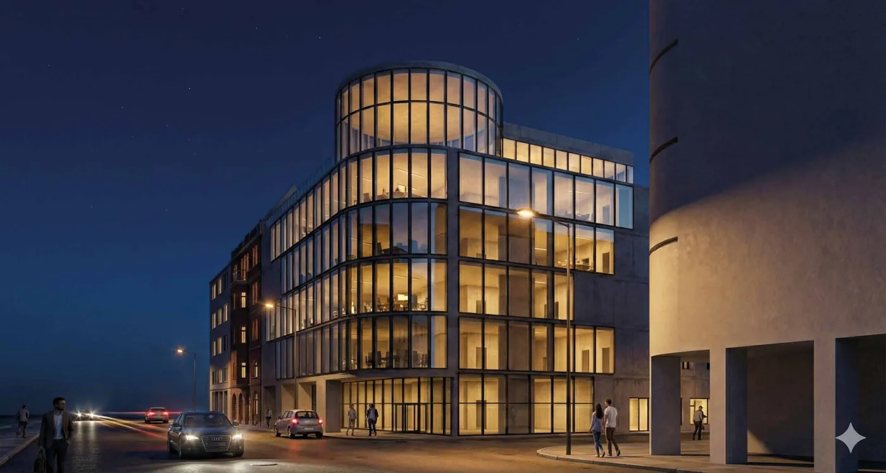
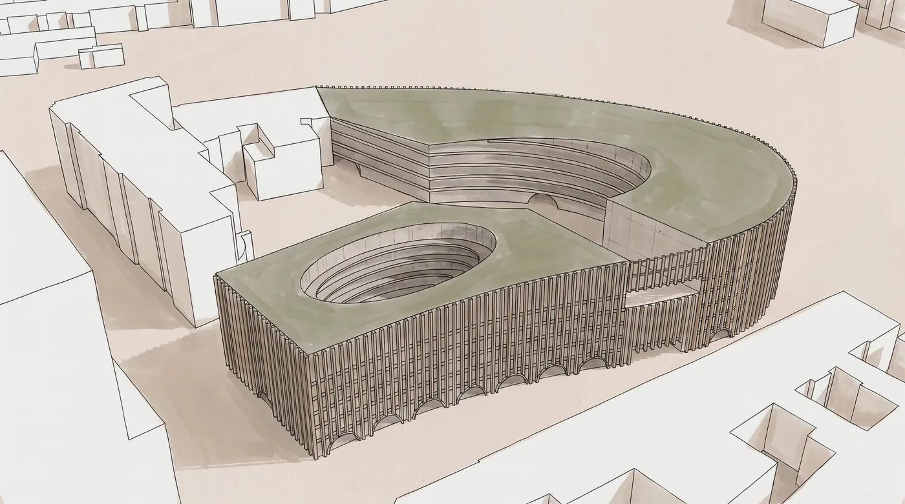
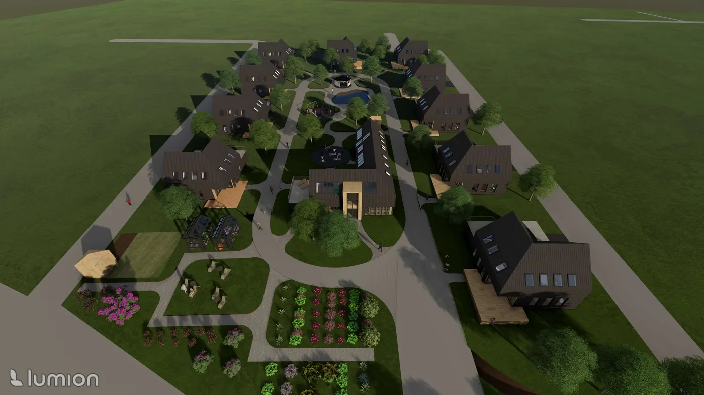

01 Kultura · 2025
Centrum Sztuki i Sceny
Wrocław, ul. Piłsudskiego
Współczesne dopełnienie pierzei ulicy Piłsudskiego — miejski „hub” dla ludzi pracy, kultury i podróży.
Zobacz projektPortfolio · 2022 — 2026
Architektka. Studia II stopnia na Wydziale Architektury Politechniki Wrocławskiej, inżynier architekt Politechniki Opolskiej.

I
Cztery prace, które najpełniej opisują sposób myślenia — od skali kwartału po krajobraz wyspy.

01 Kultura · 2025
Wrocław, ul. Piłsudskiego
Współczesne dopełnienie pierzei ulicy Piłsudskiego — miejski „hub” dla ludzi pracy, kultury i podróży.
Zobacz projekt
02 Zespół wielofunkcyjny · 2026
Wrocław, Szczepin
Bryła domykająca historyczny kwartał — brama do Szczepina, której parter wpuszcza miasto do wnętrza.
Zobacz projekt
03 Krajobraz · 2026
Wrocław
Niewielkie interwencje, które zamieniają dziką wyspę na Odrze w przestrzeń spaceru, odpoczynku i kontaktu z wodą.
Zobacz projekt
04 Mieszkalnictwo · 2025
Praca dyplomowa inżynierska
Domy jednorodzinne skupione wokół budynku wspólnego, ogrodów i szklarni — wspólnota zbudowana na codziennych rytuałach.
Zobacz projektII
15 projektów, uporządkowanych od najnowszych.
III
Projektuję z myślą o ludziach i miejscu — od wnętrza kwartału i otwartego parteru po ścieżkę prowadzącą między koronami drzew.
Pracuję w różnych skalach: od wnętrz i domów jednorodzinnych, przez budynki użyteczności publicznej i zespoły wielofunkcyjne, po projekty urbanistyczne i krajobrazowe. Proces opieram na analizie kontekstu, szkicu odręcznym i modelu roboczym, a dopiero potem na wizualizacji.